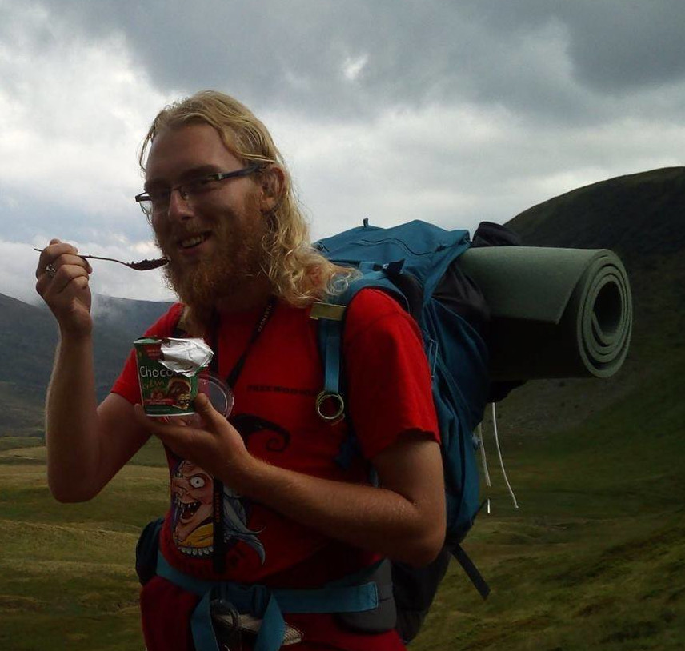

Cześć!
Mam na imię Jakub. Jestem studentem I roku kierunku Game Design – Projektowanie Narracji Gier Cyfrowych. Na codzień pracuję w korpo, ale prywatnie interesuję się podróżami, zwłaszcza tymi górskimi. Od 2017 roku jestem przewodnikiem beskidzkim (blacha SKPG nr 1042). Jedną z moich pasji jest wędrowanie szlakami długodystansowymi.
Strona ta powstała jako praca zaliczeniowa na studia i opowiada o niebieskim szlaku długodystansowym Tarnów – Wielki Rogacz, który przeszedłem w sierpniu 2018.